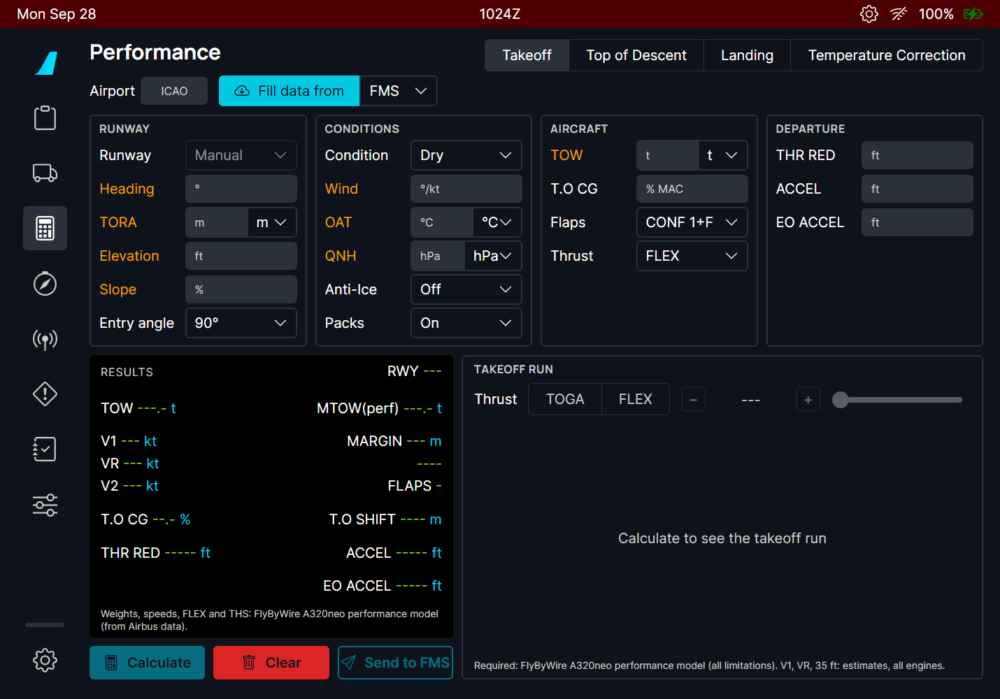
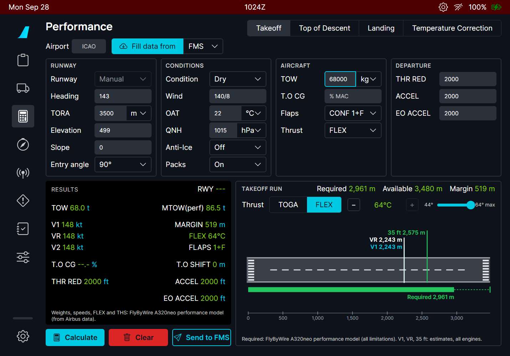
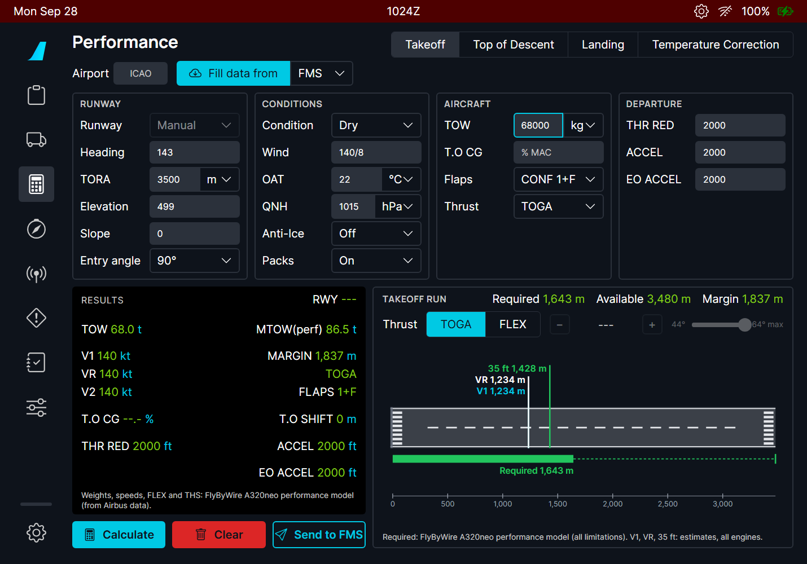
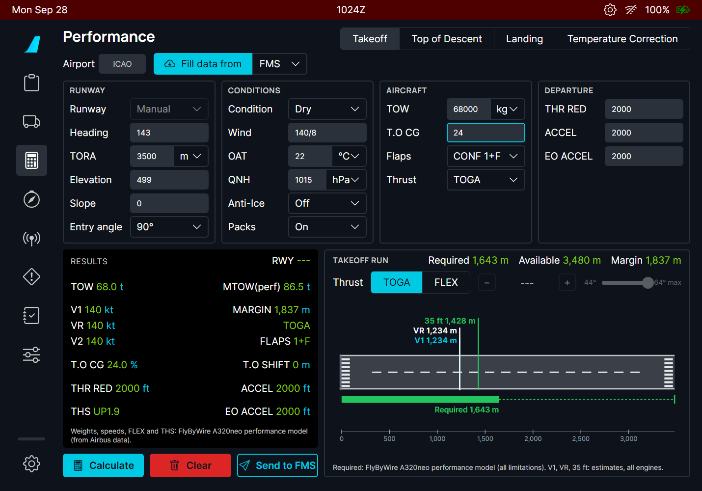
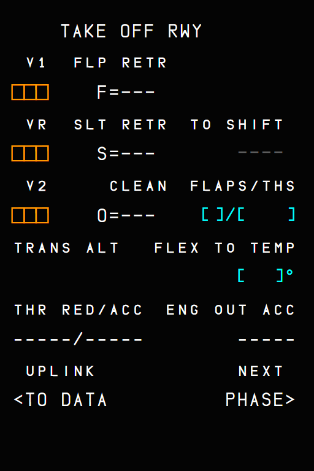
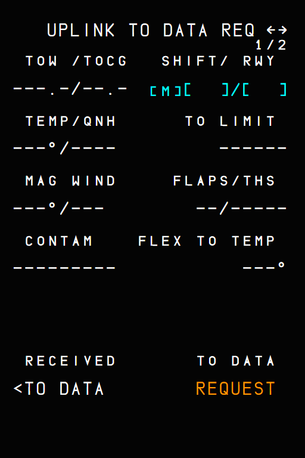
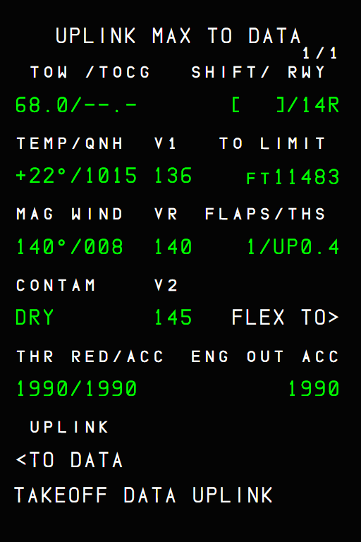
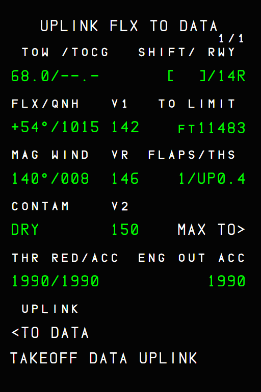
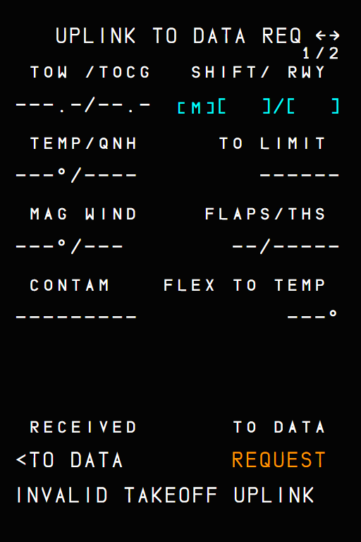

A320 takeoff calculator and MCDU uplink takeoff data
The flyPad takeoff screen of the A380, with the FBW A320neo performance model, sending its results to the MCDU as uplink takeoff data (FCOM DSC-22_20-50-10-28)
AircraftA32NX (the A380 part of the screen is in the PR 11 manual)Where to find itflyPad > Performance > Takeoff; MCDU > PERF TAKE OFF > <TO DATA (6L)PR branchpr/12-a320-takeoff-calculator (stacked on PR 11)StatusThe flyPad calculation was used in the sim; the MCDU uplink pages are checked in the harness; the full flow is still to re-test in the sim.PicturesflyPad and MCDU in the local browser harness, running the build installed in the sim. The harness has no navigation database and no flight plan: the runway is typed and the uplink is sent to the MCDU by the harness (the same message the flyPad sends).
1. What it is for
2. The flyPad screen (A320)
3. Sending to the MCDU
4. What to expect
5. Limitations and why
1. What it is for
The A320 takeoff speeds, FLEX temperature and THS come from the airline or the crew's own tool. Here the flyPad computes them with the FlyByWire A320neo performance model (built from Airbus data) and sends them to the FMGC as an uplink takeoff data message, which the crew inserts from the MCDU PERF TAKE OFF page as on the real aircraft.
2. The flyPad screen (A320)
The screen is the one of the A380 (see the PR 11 manual) with these A320 differences:
No noise procedure fields; T.O CG is optional: below 27 % MAC the forward CG performance applies (A320 FCOM PER-LOD) and the THS is shown in RESULTS.
All values come from the FBW A320 model: they are shown in green (no estimates).
Wet and contaminated runways are computed (the A380 page accepts dry only).

Figure 1. The A320 takeoff screen before any input.

Figure 2. LFBO 14R-like runway (3500 m, 499 ft), 68 t, 22 °C: FLEX 64 °C (maximum), required 2961 m of 3480 m, margin 519 m.

Figure 3. The TOGA run at the same weight: 1643 m.

Figure 4. T.O CG 24 % (forward CG) at TOGA: the THS (UP1.9) appears in RESULTS.
NoteAt light weights the FBW A320 model gives V1 = VR = V2 (the pictures show 148/148/148 at FLEX and 140/140/140 at TOGA for 68 t). This comes from the FlyByWire model itself (the same with its version before this PR), not from this feature.
3. Sending to the MCDU
On the flyPad, choose the runway from the list (the uplink carries the runway ident), calculate, choose TOGA or the FLEX temperature for the takeoff run, and press Send to FMS.
The flyPad says "Takeoff data sent to the FMS: MCDU PERF TAKE OFF, UPLINK TO DATA, RECEIVED TO DATA", and warns right away if the FMGC departure runway or TOW will prevent the insertion.
On the MCDU the scratchpad shows TAKEOFF DATA UPLINK.
PERF TAKE OFF > <TO DATA (6L) > RECEIVED <TO DATA (6L): the UPLINK MAX TO DATA page (or FLX TO DATA with 4R). Check it, then INSERT UPLINK.

Figure 5. PERF TAKE OFF: the new UPLINK <TO DATA prompt (6L), in PREFLIGHT and DONE.

Figure 6. UPLINK TO DATA REQ: the request page (two runways, 1/2). RECEIVED <TO DATA (6L), TO DATA REQUEST (6R).

Figure 7. UPLINK MAX TO DATA after TAKEOFF DATA UPLINK: TOW, runway 14R, temperature and QNH, V1 / VR / V2, TO LIMIT, flaps / THS, THR RED / ACC, ENG OUT ACC. FLEX TO> (4R) shows the FLEX data.

Figure 8. UPLINK FLX TO DATA: FLX +54 °C with its own speeds.
There is no INSERT UPLINK prompt in these pictures because the harness FMGC has no flight plan. The prompt appears only when the uplink is complete (V1 and VR present) and the checks below pass.
The insertion rules (A320 FCOM)
The uplink runway must be the departure runway of the flight plan.
The uplink TOW must be not more than 1 t below or 3 t above the FMGC TOW; otherwise there is no insertion.
INSERT UPLINK fills V1, VR, V2, FLAPS/THS, FLEX TO TEMP (cleared for a MAX takeoff), THR RED/ACC, ENG OUT ACC and the TO SHIFT.
An incomplete uplink (for example without V1 or VR) gives no INSERT UPLINK prompt (DSC-22_20-70 P 6).

Figure 9. An uplink the FMGC cannot read: INVALID TAKEOFF UPLINK in the scratchpad.
MCDU message
Meaning
TAKEOFF DATA UPLINK
Uplink takeoff data received.
INVALID TAKEOFF UPLINK
The uplink is not valid (missing data).
REQUEST IS PENDING
A request was sent and has no answer yet.
NO ANSWER TO REQUEST
No answer 4 minutes after the request.
PERF TAKE OFF also gets the TO SHIFT field (1 m up to the runway length, CLR to delete): the distance lost when taking off from an intersection.
4. What to expect
Situation
What you should see
Send to FMS with a runway from the list
Success message; TAKEOFF DATA UPLINK on the MCDU.
Send to FMS with a manual runway
Nothing is sent: choose the runway in the list.
FMGC departure runway differs
flyPad warning; no INSERT UPLINK on the MCDU.
FMGC TOW differs by more than -1 t / +3 t
flyPad warning "INSERT UPLINK needs a TOW within -1 t / +3 t"; no INSERT UPLINK.
No TOW in the FMGC
flyPad warning "No TOW in the FMS (INIT B: ZFW and BLOCK)": fill INIT B first.
INSERT UPLINK
PERF TAKE OFF filled with the uplink.
5. Limitations and why
Limitation
Why
What to do
Only the thrust selected for the takeoff run is sent.
The airline sends what the crew asked for; the MCDU holds MAX and FLEX pages, the flyPad fills the one you use.